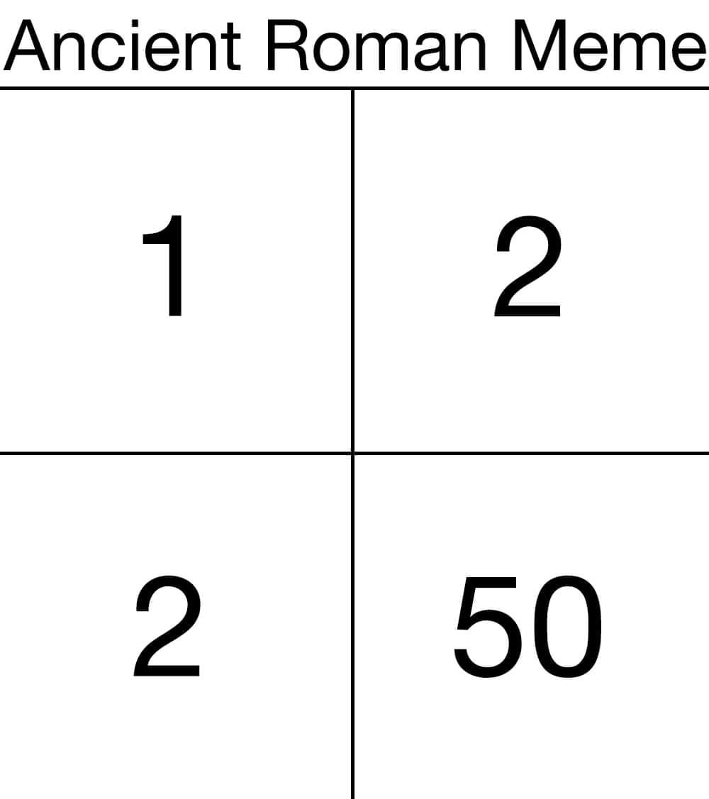

Latin Structural Vocabulary
Welcome to my SI 539 final project! This website is designed around helping elementary Latin students practice identifying structural vocabulary items, specifically for indirect commands, indirect statements, and indirect questions. Here are some Quizlets for you to practice!
Indirect Commands Verbs Quizlet:
Indirect Statement Verbs Quizlet:
Indirect Question Verbs Quizlet
After you've reviewed the Quizlets, click on a page in the navigation menu to begin!
Need some encouragement? Have some Classical Studies Memes for Hellenistic Teens!
